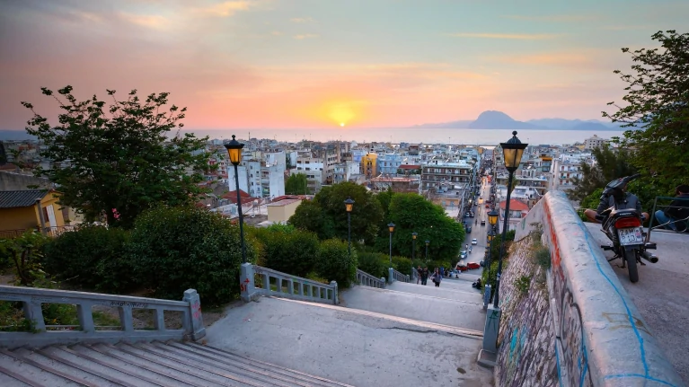
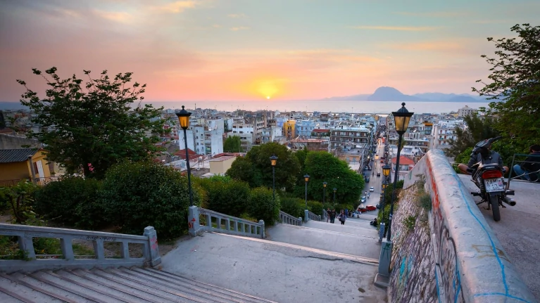
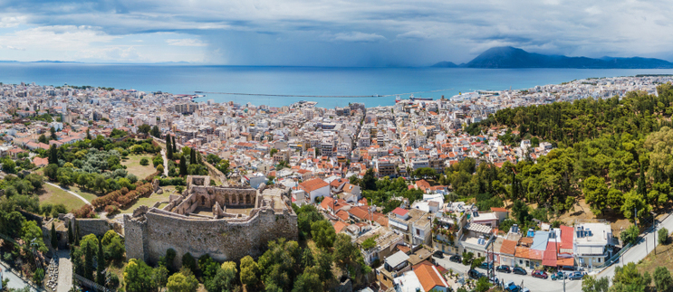
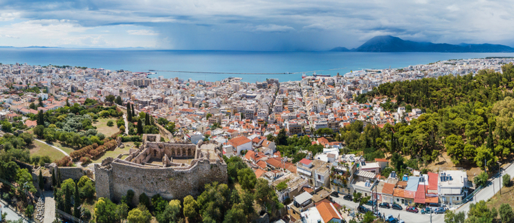

Dubbed as Greece's Gate to the West, Patras is a commercial
hub, while its busy port is a nodal point for trade and communication
with Italy and the rest of Western Europe. The city has two
public universities and one Technological Institute, hosting a large
student population and rendering Patras an important scientific centre
with a field of excellence in technological education. The Rio-Antirio
bridge connects Patras' easternmost suburb of Rio to the town of
Antirrio, connecting the Peloponnese peninsula with mainland Greece.
Every year, in February, the city hosts one of Europe's largest
carnivals: notable features of the Patras Carnival include its mammoth
satirical floats and balls and parades, enjoyed by hundreds of thousands
of visitors in a Mediterranean climate. Patras is also famous for
supporting an indigenous cultural scene active mainly in the performing
arts and modern urban literature. It was European Capital of Culture in
2006.
Dubbed as Greece's Gate to the West, Patras is a commercial hub, while
its busy port is a nodal point for trade and communication with Italy
and the rest of Western Europe. The city has two public universities and
one Technological Institute, hosting a large student population and
rendering Patras an important scientific centre with a field of
excellence in technological education. The Rio-Antirio bridge connects
Patras' easternmost suburb of Rio to the town of Antirrio, connecting
the Peloponnese peninsula with mainland Greece. Every year, in February,
the city hosts one of Europe's largest carnivals: notable features of
the Patras Carnival include its mammoth satiricalPatras is Greece's
third-largest city and the regional capital of Western Greece, in the
northern Peloponnese, 215 km (134 mi) west of Athens. The city is built
at the foothills of Mount Panachaikon, overlooking the Gulf of Patras.
Patras has a population of 213,984 (in 2011). The core settlement has a
history spanning for four millennia; in the Roman period it had become a
cosmopolitan center of the eastern Mediterranean whilst, according to
the Christian tradition, it was also the place of Saint Andrew's
martyrdom. According to the results of 2011 census, the metropolitan
area has a population of 260,308 and extends over an area of 738.87 km2
(285.28 sq mi). floats and balls and parades, enjoyed by hundreds of
thousands of visitors in a Mediterranean climate. Patras is also famous
for supporting an indigenous cultural scene active mainly in the
performing arts and modern urban literature. It was European Capital of
Culture in 2006.
People
-
Dimitris Tofalos
-
Georgios Tertsetis
-
Nikos Temponeras
-
Kostis Palamas
-
Dimitrios Gounaris


 

 
